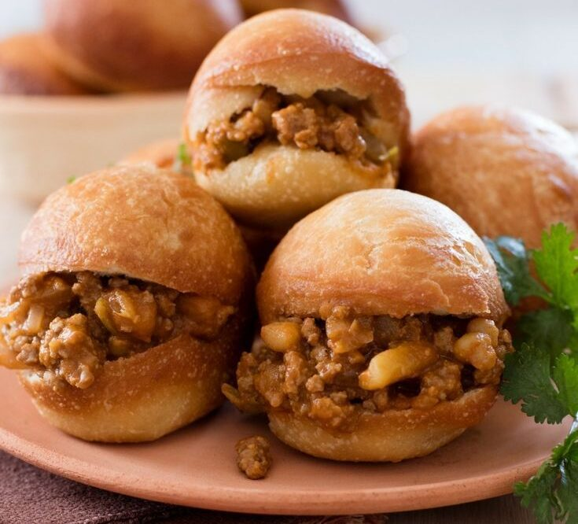

South African Traditional Vetkoek (Fried Bread)

Tasty vetkoek (fat cake) makes a lovely dinner or snack.
You can make them any size you wish; they're a great party snack when made small.
They can be filled with meat, tuna and mayo, syrup, curried minced meat, cheese, or basically anything you feel like using.
They're fast, easy, and very tasty.
Ingredients:
- 2 cups lukewarm water
- ¼ cup white sugar
- 1 (.25 ounce) package active dry yeast
- 7 cups all-purpose flour
- 2 teaspoons salt
- 3 cups oil for frying
Steps:
Step 1:
Mix lukewarm water, sugar, and yeast in a small bowl. Let stand until yeast softens and bubbles slightly, about 5 minutes.Step 2:
Sift together flour and salt in a large bowl.Step 3:
Pour yeast mixture over flour mixture and knead until dough is smooth and elastic, 5 to 7 minutes. Cover bowl with a clean cloth and let dough rise until doubled in volume, about 45 minutes.Step 4:
Pinch off a piece of dough about the size of a tennis ball; roll until smooth. Flatten ball of dough until it is palm-sized; set aside on a floured work surface. Repeat with remaining dough.Step 5:
Heat oil in a deep-fryer or large saucepan to 350 degrees F (175 degrees C).Step 6:
Fry in hot oil, 2 to 3 pieces at a time, until golden brown, about 3 minutes per side. Drain on paper towels.
Return to main page